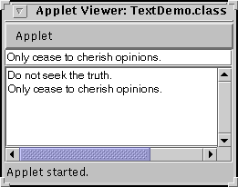

Feedback Form
|
|
Start of Tutorial > Start of Trail > Start of Lesson |
Search
Feedback Form |
A text field is a basic text control that lets the user enter a small amount of text. When the user indicates that text entry is complete (usually by pressing Enter), the text field fires an action event. If you need to obtain more than one line of input from the user, you should use a text area instead.
JTextFieldWhat this section covers: basic text fields. JFormattedTextFieldA JTextFieldsubclass that allows you to specify the legal set of characters the user can enter. See How to Use Formatted Text Fields.JPasswordFieldA JTextFieldsubclass that doesn't show the characters the user types. See How to Use Password Fields.JComboBoxCan be editable, and provides a menu of strings to choose from. See How to Use Combo Boxes. JSpinnerCombines a formatted text field with a couple of small buttons that let the user choose the previous or next available value. See How to Use Spinners.
The following example displays a basic text field and a text area. The text field is editable; the text area isn't. When the user presses Enter in the text field, the program copies the text field's contents to the text area, and then selects all the text in the text field.
 [PENDING: This snapshot will be updated.]You can run TextDemo using JavaTM Web Start
TextDemo.java. Here's the code that creates and sets up the text field:
The integer argument passed to thetextField = new JTextField(20); textField.addActionListener(this);JTextFieldconstructor,20in the example, indicates the number of columns in the field. This number is used along with metrics provided by the field's current font to calculate the field's preferred width. It does not limit the number of characters the user can enter. To do that, you can either use a formatted text field or a document listener, as described in Text Component Features.
Note: We encourage you to specify the number of columns for each text field. If you don't specify the number of columns or a preferred size, then the field's preferred size changes whenever the text changes, which can result in unwanted layout updates.The next line of code registers a
TextDemoobject as an action listener for the text field. Here's theactionPerformedmethod that handles action events from the text field:Notice the use ofprivate final static String newline = "\n"; ... public void actionPerformed(ActionEvent evt) { String text = textField.getText(); textArea.append(text + newline); textField.selectAll(); }JTextField'sgetTextmethod to retrieve the text currently contained by the text field. The text returned by this method does not include a newline character for the Enter key that fired the action event.You've seen how a basic text field can be used. Because
JTextFieldinherits fromJTextComponent, it's very flexible and can be customized almost any way you like. For example, you can add a document listener or document filter to be notified when the text changes and (in the filter case) modify the text field accordingly. Information on text components is in Text Component Features Before customizing aJTextField, however, make sure that one of the other components based on text fields won't do the job for you.Often, text fields are paired with labels that describe the text fields. See Examples that Use Text Fields for pointers to examples of creating these pairs.
The following tables list the commonly usedJTextFieldconstructors and methods. Other methods you are likely to call are defined inJTextComponent. Refer to The Text Component API.You might also invoke methods on a text field that it inherits from its other ancestors, such as
setPreferredSize,setForeground,setBackground,setFont, and so on. See The JComponent Class for tables of commonly used inherited methods.The API for using text fields falls into these categories:
- Setting or Getting the Field's Contents
- Fine Tuning the Field's Appearance
- Implementing the Field's Functionality
Setting or Getting the Field's Contents Method or Constructor Purpose JTextField()
JTextField(String)
JTextField(String, int)
JTextField(int)Create a text field. When present, the intargument specifies the desired width in columns. TheStringargument contains the field's initial text.void setText(String)
String getText()
(defined inJTextComponent)Set or get the text displayed by the text field.
Fine Tuning the Field's Appearance Method Purpose void setEditable(boolean)
boolean isEditable()
(defined inJTextComponent)Set or get whether the user can edit the text in the text field. void setColumns(int);
int getColumns()Set or get the number of columns displayed by the text field. This is really just a hint for computing the field's preferred width. void setHorizontalAlignment(int);
int getHorizontalAlignment()Set or get how the text is aligned horizontally within its area. You can use JTextField.LEADING,JTextField.CENTER, andJTextField.TRAILINGfor arguments.
Implementing the Field's Functionality Method Purpose void addActionListener(ActionListener)
void removeActionListener(ActionListener)Add or remove an action listener. void selectAll()
(defined inJTextComponent)Select all characters in the text field.
This table shows a few of the examples that useJTextFieldand where those examples are described. For examples of code that's similar among all varieties of text fields, such as dealing with layout, also look at the example lists for related components such as formatted text fields and spinners.
Example Where Described Notes TextDemo This section An application that uses a basic text field with an action listener. DialogDemo How to Make Dialogs CustomDialog.javaincludes a text field whose value is checked. You can bring up the dialog by clicking the More Dialogs tab, selecting the Input-validating dialog radio button, and then clicking the Show it! buton.TextSamplerDemo Using Text Components Lays out label-text field pairs using a GridBagLayoutand a convenience method:addLabelTextRows(JLabel[] labels, JTextField[] textFields, GridBagLayout gridbag, Container container)TextInputDemo How to Use Formatted Text Fields Lays out label-text field pairs using a SpringLayoutand aSpringUtilitiesconvenience method:makeCompactGrid(Container parent, int rows, int cols, int initialX, int initialY, int xPad, int yPad)
|
|
Start of Tutorial > Start of Trail > Start of Lesson |
Search
Feedback Form |
Copyright 1995-2004 Sun Microsystems, Inc. All rights reserved.